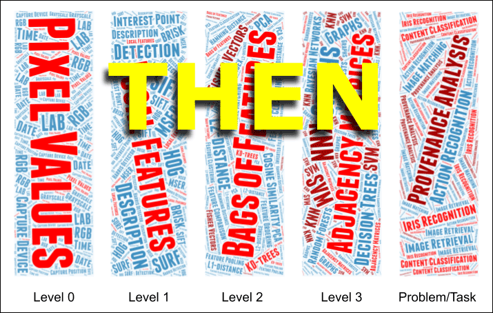
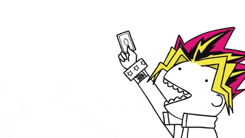

Details
Course: COMP 388-002 / COMP 488-002 Computer Science Topics
Format: Seminar, Level: Undergraduate and Graduate
Instructor: Daniel Moreira (dmoreira1@luc.edu)
Lectures: MON, 4:15 to 6:45 PM, 117 Cuneo Hall
Office Hours: TUE to FRI, 5:00 to 6:30 PM, 310 Doyle Center or Zoom, or by appointment
(please contact the instructor for accommodation).
Zoom link (for remote office hours): https://bit.ly/3Tnl9nR

Overview
How might Google or TinEye reverse image search operate? How can a computer program process the pixel values of images and video frames and classify the depicted scene, or leverage the captured faces to perform person identification? What about manipulated images with tools such as Photoshop? Are there methods to help to debunk these manipulations? These are some of the questions we will be addressing in this course, focusing on state-of-the-art Computer Vision (CV) solutions to reduce the semantic gap between the pixel values and the desired outcome of complex tasks such as content-based image retrieval, content classification and recognition, biometric identification, and media forensics, always with the greater good in mind.
Requirements to attend this course are basic programming skills (especially Python) and statistics and probability.
Schedule
| Date | Topic | Leader | Assignment |
|---|---|---|---|
| 08/29 | Introduction to CV | Instructor | N.A. |
| 09/05 | Labor Day | N.A. | A01, due on 09/13 |
| 09/12 | Letter Soup: AI, ML, NN, and DL | Instructor | A02, due on 09/20 |
| 09/19 | Local and Global Descriptors | Instructor | A03, due on 09/27 |
| 09/26 | CBIR and Indexing | TBD (students) | A04, due on 10/04 |
| 10/03 | Image Classification | TBD (students) | A05, due on 10/18 |
| 10/10 | Fall Break | N.A. | N.A. |
| 10/17 | Object Detection | TBD (students) | A06, due on 10/25 |
| 10/24 | Image Segmentation | TBD (students) | A07, due on 11/01 |
| 10/31 | Face Detection | TBD (students) | A08, due on 11/08 |
| 11/07 | Face Verification | TBD (students) | A09, due on 11/15 |
| 11/14 | GANs and Generative DL | TBD (students) | A10, due on 11/29 |
| 11/21 | Deep and Cheap Fakes | Instructor | N.A. |
| 11/28 | Sensitive Media Analysis | Instructor | N.A. |
| 12/05 | Provenance Analysis | TBD (students) | N.A. |
| 12/12 | Final Exam | N.A. | N.A. |
Assignments
- A01: TBD, released no later than 09/05, due on 09/13 at noon.
- A02: TBD, released no later than 09/12, due on 09/20 at noon.
- A03: TBD, released no later than 09/19, due on 09/27 at noon.
- A04: TBD, released no later than 09/26, due on 10/04 at noon.
- A05: TBD, released no later than 10/03, due on 10/18 at noon.
- A06: TBD, released no later than 10/17, due on 10/25 at noon.
- A07: TBD, released no later than 10/24, due on 11/01 at noon.
- A08: TBD, released no later than 10/31, due on 11/08 at noon.
- A09: TBD, released no later than 11/07, due on 11/15 at noon.
- A10: TBD, released no later than 11/14, due on 11/29 at noon.
Students will have to do at most eight assignments. Each assignment will comprise a particular set of scientific articles. Students will have to choose one of the articles for each assignment and provide a summary on the due date. There is no limit of pages for the summaries. Each summary should contain:
(1) What is the problem addressed in the article?
(2) Why is it important to address this problem?
(3) How do the authors address the problem?
(4) What are the authors’ claims?
(5) What methodology did they adopt (e.g., datasets, problem metrics, experiments) to prove their claims?
(6) Do you agree with the authors’ claims?
(7) For the graduate students, how do you think you may use this work in your research?
(8) What open questions do you have about the article?
Discussion Leaders
- CBIR and Indexing, TBD (students), on 09/26.
- Image Classification, TBD (students), on 10/03.
- Object Detection, TBD (students), on 10/17.
- Image Segmentation, TBD (students), on 10/24.
- Face Detection, TBD (students) on 10/31.
- Face Verification, TBD (students) on 11/07.
- GANs and Generative DL, TBD (students), on 11/14.
- Provenance Analysis, TBD (students), on 12/05.
Each student will play the role of discussion leader twice along the course. Students will lead discussion in groups, preferably in pairs of one graduate and one undergraduate student. The graduate students are expected to help their undergraduate peers.
Discussion leaders will be responsible for organizing a 1.5-hour presentation of the topic of the day, resorting to slides, videos, and demonstrations. The instructor advises the discussion leaders to share their material with him a couple of days before the presentation day.
Discussion leaders will also receive the summaries of the articles and open questions related to their topics from the other students at least 5 days before their presentation.The discussion and assignment topics coincide; as a consequence, discussion leaders are not required to provide summaries for the topics they will present.
Final Exam
Date and Local: 12/12, 4:15 PM, 117 Cuneo Hall
Format: Oral Quiz
Grading
| Concept | Point Interval | Concept | Point Interval | Concept | Point Interval | Concept | Point Interval |
|---|---|---|---|---|---|---|---|
| A | [94, 100) | B+ | [88, 89] | C+ | [78, 79] | D | [60, 69] |
| A- | [90, 93] | B | [84, 87] | C | [74, 77] | F | [0, 59] |
| B- | [80, 83] | C- | [70, 73] |
Distribution
- Total: 100 points
- Class Presence and Participation: 6 points (x13)
- Assignments: 1 point (x8)
- Discussion Leadership: 3 points (x2)
- Final Exam: 8 points
- CV-on-the-news Post: 1 point (extra)
- Demonstration on Discussion Day: 5 points (extra)
- Late Assignments: -1 point per day

Each student has two “Oopsie” cards (OC), which will allow them to either avoid losing points because of absence or extend due dates until 12/11. They may use an OC at their discretion for any task, except for their assigned days of discussion leadership and final exam. Please let the instructor know you want to use your OC.

Useful Links
Links useful to the course will be posted here.
CV On the News
News involving CV issues shared and discussed by the students and instructor will be posted here.
References
References to scientific articles will be posted here.
Academic Integrity
Students are expected to adhere to the LUC statements on academic integrity available at https://bit.ly/3TmiQkQ. These policies fully apply to this course. The penalty for task-wise academic misconduct is zero points. Multiple events of misconduct will incur in failing the entire course (with an F grade). All cases of academic misconduct will be reported to the proper department offices.